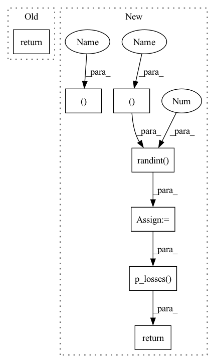

Pattern ID :2696
Before Change
cond_drop_prob = 0.2, // for the classifier free guidance
text_embed = None // in paper, text embedding was optional for conditioning decoder
):
return image
// main class
After Change
return loss
def forward(self, image, *args, **kwargs):
b , device, img_size , = image.shape[0], image.device, self.image_size
check_shape(image, "b c h w", h = img_size, w = img_size, c = self.channels)
times = torch.randint(0 , self.num_timesteps, (b ,), device = device, dtype = torch.long)
image_embed = self.get_image_embed(image)
loss = self.p_losses( x, times, image_embed = image_embed, *args, **kwargs)
return loss
// main class
In pattern: SUPERPATTERN
Frequency: 3
Non-data size: 7
Instances Fragment ID: 15153719
Project Name: lucidrains/dalle2-pytorch
Commit Name: 33d69d3859461f6cdc824a20b8d2fcfdb7e19549
Time: 2022-04-12
Author: lucidrains@gmail.com
File Name: dalle2_pytorch/dalle2_pytorch.py
M Class Name: Decoder
N Class Name: Decoder
M Method Name: forward(2)
N Method Name: forward(1)
M Parent Class: nn.Module
N Parent Class: nn.Module
M File Name: dalle2_pytorch/dalle2_pytorch.py
N File Name: dalle2_pytorch/dalle2_pytorch.py
M Start Line: 465
M End Line: 465
N Start Line: 618
N End Line: 625
Before Change
text,
image = None
):
return image_embed
// decoder
After Change
return loss
def forward(self, text, image, *args, **kwargs):
b, device, img_size , = image.shape[0], image.device, self.image_size
check_shape(image, "b c h w", h = img_size, w = img_size, c = self.channels)
times = torch.randint(0 , self.num_timesteps, (b, device = device, dtype = torch.long)
image_embed = self.get_image_embed(image)
text_cond = self.get_text_cond(text)
loss = self.p_losses( x, times, image_embed = image_embed, text_cond = text_cond, *args, **kwargs)
return loss
// decoder
Fragment ID: 15153718
Project Name: lucidrains/dalle2-pytorch
Commit Name: 791d27326a894ce6d6873b77b51ce23e0cf53851
Time: 2022-04-13
Author: lucidrains@gmail.com
File Name: dalle2_pytorch/dalle2_pytorch.py
M Class Name: DiffusionPrior
N Class Name: DiffusionPrior
M Method Name: forward(3)
N Method Name: forward(1)
M Parent Class: nn.Module
N Parent Class: nn.Module
M File Name: dalle2_pytorch/dalle2_pytorch.py
N File Name: dalle2_pytorch/dalle2_pytorch.py
M Start Line: 288
M End Line: 288
N Start Line: 428
N End Line: 436
Before Change
super().__init__()
def forward(self, x):
return x
After Change
return loss.mean()
def forward(self, img, *args, **kwargs):
b, c, h, w, device, img_size , = *img.shape, img.device, self.image_size
assert h == img_size and w == img_size, f"height and width of image must be {img_size}"
t = torch.randint(0 , self.num_timesteps, (b, device=device) .long()
img = normalize_to_neg_one_to_one(img)
return self.p_losses( img, t, *args, **kwargs)
// dataset classes
class Dataset(Dataset): Fragment ID: 15153717
Project Name: lucidrains/med-seg-diff-pytorch
Commit Name: e37e2110c991bb233438542af9b766b3e3b00739
Time: 2022-11-27
Author: lucidrains@gmail.com
File Name: med_seg_diff_pytorch/med_seg_diff_pytorch.py
M Class Name: MedSegDiff
N Class Name: MedSegDiff
M Method Name: forward(2)
N Method Name: forward(2)
M Parent Class: nn.Module
N Parent Class: nn.Module
M File Name: med_seg_diff_pytorch/med_seg_diff_pytorch.py
N File Name: med_seg_diff_pytorch/med_seg_diff_pytorch.py
M Start Line: 12
M End Line: 12
N Start Line: 646
N End Line: 651